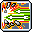

基本介紹
職業分類：英雄團、弓箭手類型
主武器是雙弩槍(雙手武器)，副武器為魔法箭
主屬性為敏捷
操作需眾多技能連接街技能
優勢
1.天生每4秒，回復最大HP/MP的5%
2.爬梯子或繩索只要1秒
3.天生速度+40，跳躍+20
4.可以無視怪物防禦力100%
5.可以推怪、挑怪、暈怪
6.爆擊率超高可疊會心
7.召喚獸威力爆高達625%
8.傷害少30%，連歸1完都會剩30%血
9.有25%異常狀態與元素抵抗力
10.60%機率迴避敵人攻擊，經常回避歸1
11.無敵技能一堆
12.最快1秒鐘打28.3下，比機甲機關槍還快
弱勢
1.HP偏少
2.攻擊力偏低
傳授技能
●精靈的祝福：
1.可以返回櫻花處，冷卻時間1800秒
2.70等：經驗值+10%
3.120等：經驗值+15%
新手技能
●精靈的回復:每4秒，利用自然界中淨化的能量，持續恢復HP和 MP 5%
●/2.png) 時髦的移動:可藉由在天梯或繩索快速向上移動。
時髦的移動:可藉由在天梯或繩索快速向上移動。
●王的資格:永久提高攻擊速度1階段、移動速度10、跳躍力20、魅力等級30
●精靈的祝福:永久打怪經驗值+15%
一轉技能
●急速雙擊:消耗 MP14，最多對 3 名敵人發射 125% 傷害的弓箭 3 個
●潛在力量:移動速度增加30，最大移動速度上限增加值至165，總傷害增加20%，以20%機率迴避敵人的攻擊
●藝術跳躍:消耗 MP10，跳躍一定距離
●鋒利瞄準:爆擊機率提升 40%
二轉技能
●精準光速神弩:消耗 MP24 ，最多對 6 名敵人，用 120% 的傷害進行 4 次貫通攻擊
●昇龍刺擊:消耗 MP25，最多對 8 名敵人，用 210% 傷害突進，以 220% 的傷害踢飛。 攻擊漂浮狀態的敵人時，追加傷害 30%
快速推開前方多數敵人後，使之浮到空中。攻擊浮空狀態的敵人時可造成追加傷害。 按
/下.png) +使用時，可以直接使用第二段突刺
+使用時，可以直接使用第二段突刺
●最終一擊:消耗 MP16，最多對 8 名敵人，以 85% 傷害進行 4 次攻擊
●雙弩槍推進器:消耗 MP11，200 秒內提升攻擊速度
●靈魂灌注:提升傷害 30%、爆擊機率 15%
●雙弩槍精通:提升雙弩槍系列武器的熟練度 50%，命中值 120
●/15.png) 終極攻擊:雙弩槍:以 40% 機率發動 2 次 75% 傷害的終極攻擊
終極攻擊:雙弩槍:以 40% 機率發動 2 次 75% 傷害的終極攻擊
●體能訓練:永久增加力量 30、敏捷性 30
三轉技能
●光速雙擊:消耗 MP35，對最多 5 個敵人發射 260% 傷害的箭矢 4 發 (四轉會強化到380%*4) 以 80% 機率使敵人在 6 秒內陷入暈倒狀態，對暈倒狀態的敵人額外產生 20% 傷害
可與 /27.png) 連技
連技
●/18.png) 落葉旋風射擊:消耗 MP45，最多對 8 名敵人，以 260% 傷害進行 4 次攻擊 (四轉強化至390%*4)
落葉旋風射擊:消耗 MP45，最多對 8 名敵人，以 260% 傷害進行 4 次攻擊 (四轉強化至390%*4)
可與連技
●獨角獸射擊:消耗 MP62，對最多 8 個敵人造成 315% 的爆擊傷害 5 次。 (四轉強化至415%*5) 對象會以 100% 機率在 30 秒內產生額外+30%傷害的DEBUFF效果
可與 連技
●旋風突進:消耗 MP45，最多對 6 名敵人，以 260% 傷害進行 4 次攻擊 (四轉強化至430%*4)
可與 連技
●騰空踢擊:消耗 MP28，最多可對 8 個敵人造成 105% 的傷害，施放 6 次攻擊。 被動效果： 昇龍刺擊傷害提升 15%
可與連技
●依古尼斯咆哮:使用連結技能時，最終傷害+2% , 最多疊加 10 次(20%)。維持 15 秒(不受加持影響)。20% 機率迴避、最終傷害+15%
●水之盾:消耗 MP:100， 180 秒內吸收最多 30% 的傷害，啟動增加狀態異常耐性和所有屬性耐性 25 的水之保護膜。
●元素騎士: MP:60 在 3名精靈中隨機挑擇一名召喚 210 秒
冷氣精靈： 用 385% 攻擊，將目標以 90% 機率陷入 5 秒的結冰
火焰精靈： 用 385% 攻擊，目標在 5 秒內，每 1 秒持續受到 110% 的傷害
黑暗精靈： 用 485% 攻擊
四轉技能
●進階光速雙擊:MP35，對最多 8 個敵人發射 380% 傷害的箭矢 4 發，以 80% 機率使敵人在 6 秒內陷入暈倒狀態，對暈倒狀態的敵人額外產生 20% 傷害
●伊修塔爾之環:消耗 MP:10，對前方敵人，每一發以 220% 傷害進行 2 次攻擊 被動效果： 光速雙擊傷害提升 100%
●傳說之槍:消耗 MP60 , 最多對 12 個敵人以 610% 進行爆擊攻擊 3 次。 30 秒內 敵人防禦力 -30% 的debuff。
可與連技
被動效果：落葉旋風射擊傷害提升 130%
●閃電之鋒:最多可對 8 個敵人以 420% 傷害攻擊 3 次並往前方移動。 攻擊BOSS時，30 秒內 伊修塔爾之環 傷害+20%
可與連技
被動效果：旋風突進傷害提升 170%
●旋風月光翻轉:消耗 MP70 , 最多可對 8 個敵人以 300% 傷害攻擊 6 次。 被動效果：昇龍刺擊, 騰空踢擊的傷害增加 195%
可與連技
●遠古意志:消耗 MP:80， 210 秒內提高 %攻30%，體力 1500 被動效果： 提高依古尼斯咆哮的迴避機率 20%
●進階雙弩槍精通:雙弩槍系列武器的熟練度提升至 70%，物理攻擊力 +30，爆擊傷害增加 10%
●破防射擊:無視敵人防禦 25%，最終傷害+20%，暴擊傷害增加 15%，Boss傷害增加 15%
●進階終極攻擊:永久增加攻擊力 20、命中率 10%，攻擊時以 75% 機率發動 2 次 120% 傷害終極攻擊
●精神迴避:耗MP:250 借助精靈的力量迴避危險。在空中使用精靈遊俠的攻擊技能時，按著方向鍵↑、↓、← ,→ 使用的話，就會取消目前使用中的技能，迅速移動到該方向。
●楓葉祝福
●/36.png) 楓葉淨化
楓葉淨化
超技能
●精靈祝福:消耗 MP300，60 秒內攻擊力提高 80，格擋 100%。 冷卻時間 90 秒
●憤怒天使:消耗 MP:200 , 對前方 10 個敵人以 400% 傷害攻擊 10 次
可與連技
●英雄誓言:60 秒內提高 傷害10%。
五轉技能
●元素精靈:Lv.30 消耗MP:1000，在70秒內，使用自身攻擊技能時進行最高三次的影分身攻擊。 殘影的傷害是原先技能的60%。殘影發動機率90%，每個殘影發動機率遞減20%。 伊修塔爾的殘影機率只有別的殘影的一半。
在此狀態下，每10秒出900% *8的櫻花樹攻擊 使用連技時減少櫻花樹的冷卻時間1秒。冷卻150秒
●/41.png) 西皮迪亞:消耗MP:1000，45秒騎乘西皮迪亞，格擋+100%、攻擊力%+20%、減傷25%(可減免百分比傷害)。 按技能或空中按跳可發動突進攻擊、按著↑再衝可以斜衝。以1425%攻擊9次。 冷卻150秒
西皮迪亞:消耗MP:1000，45秒騎乘西皮迪亞，格擋+100%、攻擊力%+20%、減傷25%(可減免百分比傷害)。 按技能或空中按跳可發動突進攻擊、按著↑再衝可以斜衝。以1425%攻擊9次。 冷卻150秒
●伊里加爾的氣息: 消耗MP:150，最多8.5秒內可使用技能，對10名敵人以825%的傷害值連續攻擊6次。後退時可使用，點擊兩次方向鍵 ←← or →→ 可轉換方向。 冷卻120秒